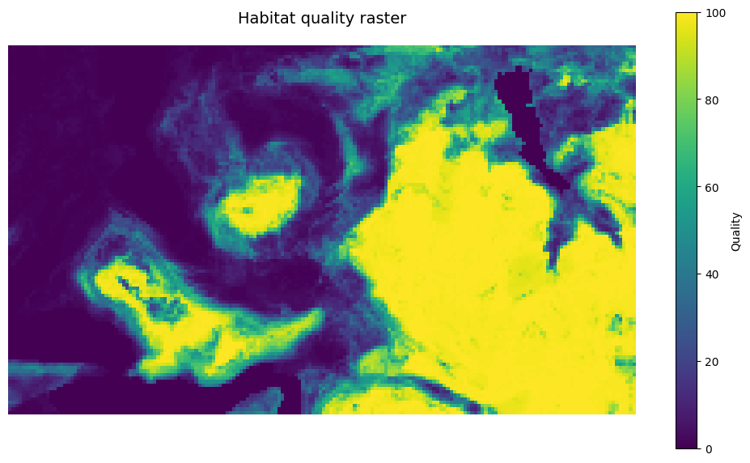

Moving window operations¤
Process large rasters efficiently using spatial decomposition. JAXScape's WindowOperation divides landscapes into overlapping windows with buffer zones, enabling memory-efficient sequential processing or GPU-accelerated batch operations.
Prerequisites¤
pip install jaxscape rasterio matplotlib
import jax.numpy as jnp
import matplotlib.pyplot as plt
import rioxarray
from jaxscape import padding, WindowOperation
Load habitat quality raster for demonstration.
# Load habitat quality raster
raster = rioxarray.open_rasterio("../data/suitability.tif", masked=True)
quality = jnp.array(
raster.sel(band=1).fillna(0), dtype="float32"
) # Replace no-data values with 0
print(f"Raster shape: {quality.shape}")
print(f"Value range: [{quality.min():.2f}, {quality.max():.2f}]")
Raster shape: (107, 182)
Value range: [0.00, 100.00]
/Users/victorboussange/projects/jaxscape/.venv/lib/python3.12/site-packages/pyproj/crs/_cf1x8.py:515: UserWarning: angle from rectified to skew grid parameter lost in conversion to CF
warnings.warn(
# Visualize the full raster
fig, ax = plt.subplots(figsize=(10, 8))
im = ax.imshow(quality, cmap="viridis")
ax.set_title("Habitat quality raster", fontsize=14, pad=20)
ax.axis("off")
plt.colorbar(im, ax=ax, label="Quality", shrink=0.7)
plt.tight_layout()
plt.show()

Initialize window operation¤
Window parameters define the tile size and overlap. Before feeding the raster to the WindowOperation class, we can use jaxscape.padding to ensure that windows have complete neighborhoods; WindowOperation will error otherwise.
buffer_size = 10 # Overlap zone to handle edge effects
window_size = 50 # Core area of each window (in pixels)
quality_padded = padding(quality, buffer_size, window_size)
print(f"\nOriginal raster shape: {quality.shape}")
print(f"Padded raster shape: {quality_padded.shape}")
# Initialize window operation manager
window_op = WindowOperation(
shape=quality_padded.shape, window_size=window_size, buffer_size=buffer_size
)
print(f"Total number of windows: {window_op.nb_steps}")
Original raster shape: (107, 182)
Padded raster shape: (120, 220)
Total number of windows: 8
Lazy iterator: memory-efficient processing¤
The lazy iterator yields windows one at a time (via Python generator), ideal for memory-constrained environments or sequential processing. Each iteration provides window coordinates (x, y) and the data array. This enables processing arbitrarily large rasters as long as individual windows fit in memory.
# Visualize all windows using lazy iteration
n_windows = window_op.nb_steps
n_cols = 4
n_rows = int(jnp.ceil(n_windows / n_cols))
fig, axs = plt.subplots(n_rows, n_cols, figsize=(12, 3 * n_rows))
axs = axs.flatten() if n_windows > 1 else [axs]
for i, (xy, window) in enumerate(window_op.lazy_iterator(quality_padded)):
ax = axs[i]
im = ax.imshow(window, cmap="viridis")
ax.set_title(f"Window {i+1}\nPosition: ({xy[0]}, {xy[1]})", fontsize=10)
ax.axis("off")
# Draw rectangle showing core area (excluding buffer)
from matplotlib.patches import Rectangle
rect = Rectangle(
(buffer_size, buffer_size),
window_size,
window_size,
linewidth=2,
edgecolor="red",
facecolor="none",
)
ax.add_patch(rect)
# Hide unused subplots
for j in range(i + 1, len(axs)):
axs[j].axis("off")
plt.tight_layout()
plt.show()
print(f"Processed {i+1} windows (red rectangles = core areas)")

Processed 8 windows (red rectangles = core areas)
Eager iterator: vectorized batch processing¤
The eager iterator loads all windows into memory at once, returning coordinate and data arrays with shapes (n_windows, 2) and (n_windows, height, width). This enables vectorized operations across all windows simultaneously via jax.vmap, dramatically accelerating GPU/TPU processing. The trade-off is higher memory consumption.
# Load all windows at once for batch processing
xy_coords, windows = window_op.eager_iterator(quality_padded)
print(f"Coordinates shape: {xy_coords.shape}")
print(f"Windows shape: {windows.shape}")
Coordinates shape: (8, 2)
Windows shape: (8, 70, 70)
Update raster with processed windows¤
The update_raster_with_focal_window method replaces a window's core area (excluding buffers) with new data. It automatically handles buffer zones by writing only core regions, maintaining spatial continuity across window boundaries.
# Example: Replace window 3's core area with ones (demonstrating update)
window_index = 2 # Zero-indexed: window 3
new_window = jnp.ones(windows[window_index].shape, dtype="float32")
# Update the padded raster
updated_raster = window_op.update_raster_with_core_window(
xy_coords[window_index], quality_padded, new_window
)
# Visualize the updated raster
fig, ax = plt.subplots(figsize=(10, 8))
im = ax.imshow(updated_raster, cmap="viridis")
ax.set_title(f"Updated raster (window {window_index + 1} modified)", fontsize=12)
ax.axis("off")
plt.tight_layout()
plt.show()